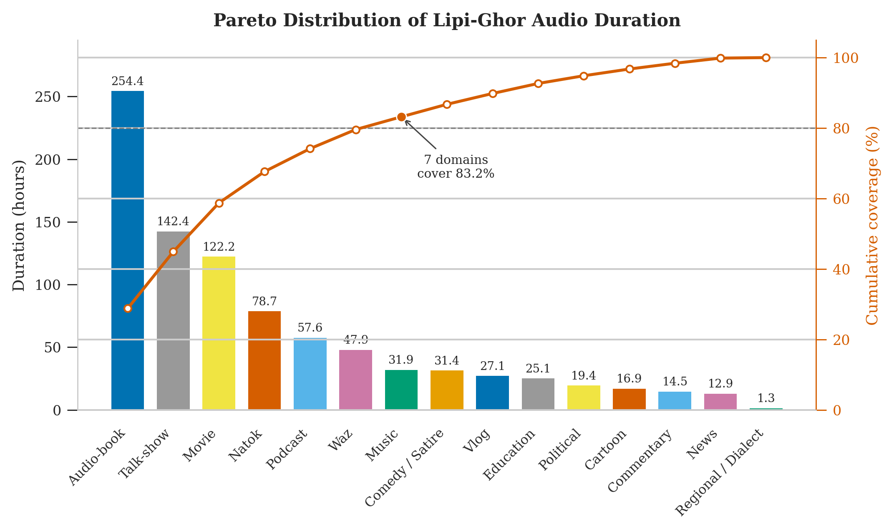
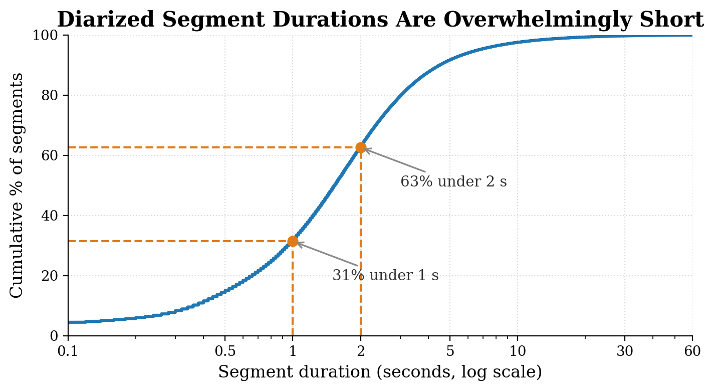
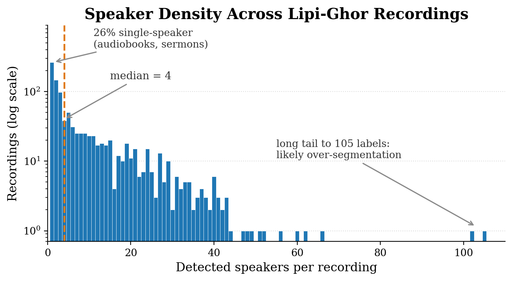
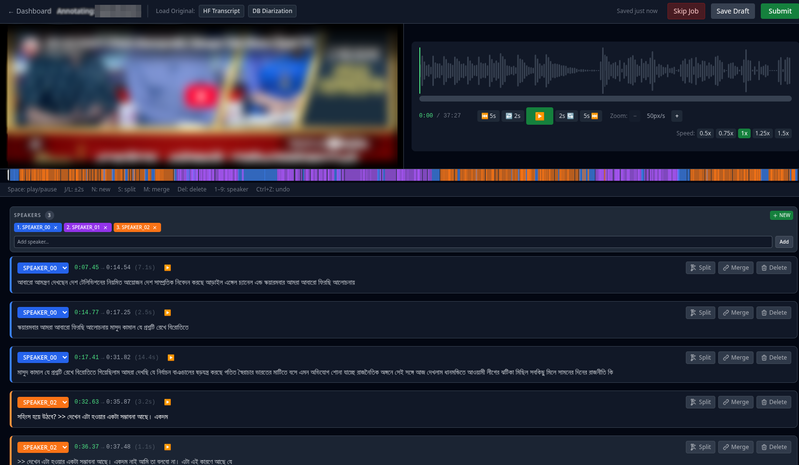
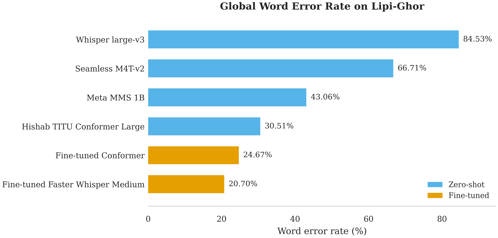
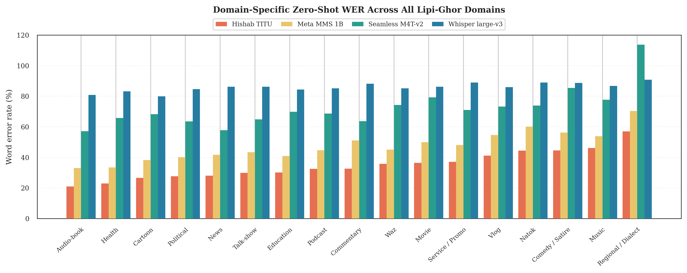
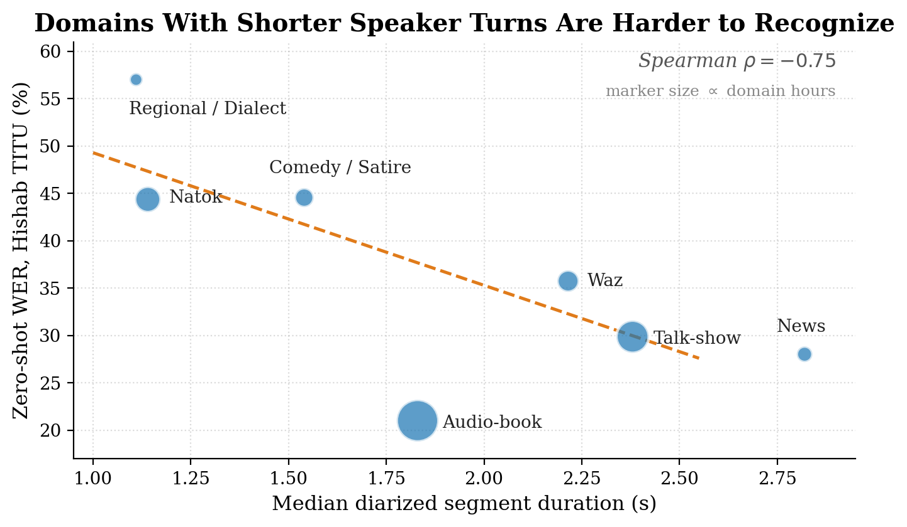

Lipi-Ghor: A Large-Scale, Diarized, Multi-Domain Bengali Speech Corpus and a Scalable Pipeline for Building It
1Department of Electrical and Electronic Engineering, KUET, Khulna, Bangladesh
2Department of Computer Science and Engineering, BUET, Dhaka, Bangladesh
EMNLP 2026 · SALMA Workshop
Lipi-Ghor brings 885.34 hours of long-form Bengali speech across 17 domains into a single speaker-diarized SSTT corpus, together with a scalable construction pipeline and a human-corrected gold evaluation split.
Overview
Abstract
Lipi-Ghor is a large-scale weakly supervised Bengali speech corpus designed to move beyond short, read-speech benchmarks. The released corpus combines long-form YouTube audio with speaker diarization and Bengali caption tracks in an SSTT schema: Speaker, Speech, Transcription, and Timestamp.
The corpus spans 885.34 hours across 998 unique videos from 596 channels and 17 domains. It also includes a human-corrected gold evaluation split and benchmark experiments covering zero-shot and fine-tuned ASR systems. The accompanying construction pipeline is designed to be reproducible for other caption-rich, low-resource languages.
Dataset
Built for real Bengali speech
Long-form, multi-speaker, domain-diverse speech instead of only isolated read utterances.
What makes Lipi-Ghor different?
- Speaker-attributed, timestamped annotations for long-form Bengali recordings.
- Seventeen content domains, including audiobooks, talkshows, movies, natok, sermons, news and regional/dialect speech.
- Weakly supervised bulk corpus plus a separate human-corrected evaluation split.
- Corpus construction pipeline released as a reusable recipe for caption-rich low-resource languages.
Open Bengali speech resources
| Corpus | Hours | Domains | Diarized | Long-form |
|---|---|---|---|---|
| Common Voice bn | ~40 | 1 | — | — |
| BengaliAI Speech | ~1200* | few | — | — |
| OOD-Speech (test) | 23 | 17 | — | — |
| BengaliLoop (eval) | small | few | ✓ | ✓ |
| Lipi-Ghor | 885 | 17 | ✓ | ✓ |
* Predominantly short, read/controlled speech.
Method
The Lipi-Ghor pipeline
Four stages turn a curated set of Bengali YouTube channels into a speaker-diarized SSTT corpus.
Channel curation
Manually identify high-volume Bengali channels across target domains, then expand toward a long-tail of additional channels for diversity.
Transcript filtering
Retain videos with Bengali bn caption tracks and distribute availability checks across multiple compute environments.
Audio + caption extraction
Extract MP3 audio and Bengali subtitles with yt-dlp, remove cross-domain duplicates, and preserve source video IDs.
SSTT annotation
Apply Precision-2 diarization and align speaker turns with Bengali transcripts to create Speaker / Speech / Transcription / Timestamp records.
Analysis
Corpus figures
These cards use the figures already present in your repository's assets/ folder.

.png)


Gold Evaluation
Human-corrected reference split
A 500-clip evaluation split is stratified across all 17 domains.
Seventeen native Bengali-speaking volunteer annotators contributed approximately 30 hours of correction work. The annotation interface lets annotators inspect the source video, waveform, speaker ribbon, timestamps and transcript segments while correcting the machine baseline.
500 clips
17 annotators
~30 h correction

Benchmarks
ASR evaluation
The paper evaluates four zero-shot systems and reports downstream fine-tuned baselines on Lipi-Ghor.

Zero-shot
| Model | WER | CER |
|---|---|---|
| Hishab TITU Conformer-L | 30.51 | 18.23 |
| Meta MMS 1B | 43.06 | 21.16 |
| Seamless M4T-v2 | 66.71 | 45.54 |
| Whisper large-v3 | 84.53 | 72.92 |
Fine-tuned
| Model | WER | CER |
|---|---|---|
| Fast Conformer (A) | 24.67 | 15.56 |
| Faster Whisper Medium (B) | 20.70 | 11.90 |
| Moonshine-Base Bengali† | 21.54 | 10.79 |


Responsible use
Limitations, licensing and intended use
Weak supervision
Caption-derived transcripts are not fully human-verified and may differ from human references in punctuation, normalization and code-switched speech.
Diarization caveats
Bulk speaker labels are automatically generated and should be treated as corpus metadata rather than a fully human-validated diarization benchmark.
Distribution
Raw audio is not redistributed. Original contributions are released under CC-BY-4.0, while caption-derived transcripts remain subject to source rights and research-use constraints.
Citation
Cite Lipi-Ghor
Use the dataset citation below for the public Hugging Face release. Replace or add the final workshop-proceedings BibTeX once the archival citation is available.
@dataset{lipighor2026,
title = {Lipi-Ghor: A Large-Scale Bengali Speech Dataset with Speaker Diarization and Transcription},
author = {Hasan, Sanjid and Fuad, A. H. M. and Labib, Risalat and Hasan, Bayazid},
year = {2026},
publisher = {Hugging Face},
doi = {10.57967/hf/7877},
url = {https://huggingface.co/datasets/Sanjidh090/Lipi-Ghor-bn-882-SSTT}
}